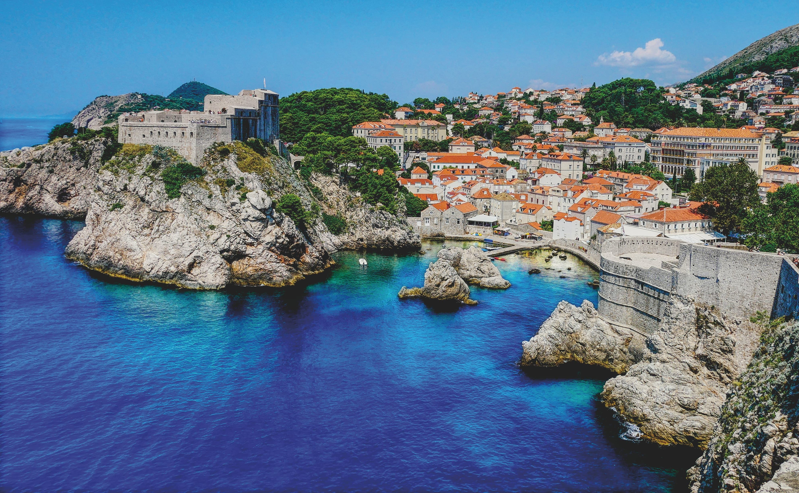
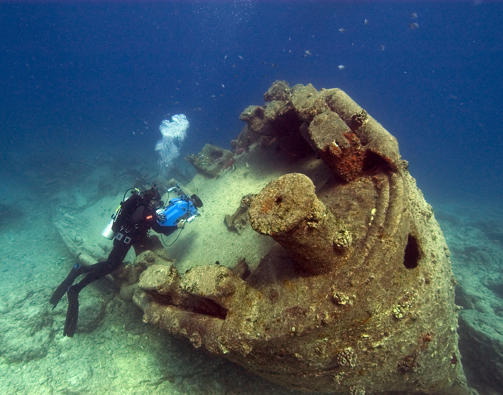
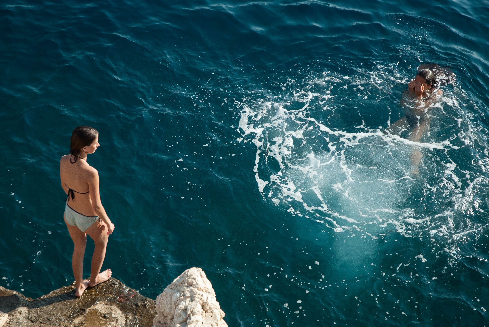

Tauchen in Kroatien
Kroatien besticht nicht nur durch landschaftliche Schönheit und kristallklares Meer, sondern auch mit einzigartigen Tauchspots. Auch Wracktauchen ist möglich - es gibt davon zahlreiche am Meeresgrund.

Von der Tauchbasis aus werden über 30 Tauchplätze vor Istrien angefahren. Hier wird es definitiv nicht langweilig. Man kann diverse Riffe betauchen oder "Open Sea", also im Freiwasser. Nervenkitzel pur!

Aber man kann in Kroatien nicht nur Tauchen. Das schöne Meer lädt zu ausgiebigen Segeltrips oder SUP-Ausflügen ein. Die Kliffe laden zudem auch zum Klippenspringen ein. Dies ist aber nicht jedermanns Sache.
